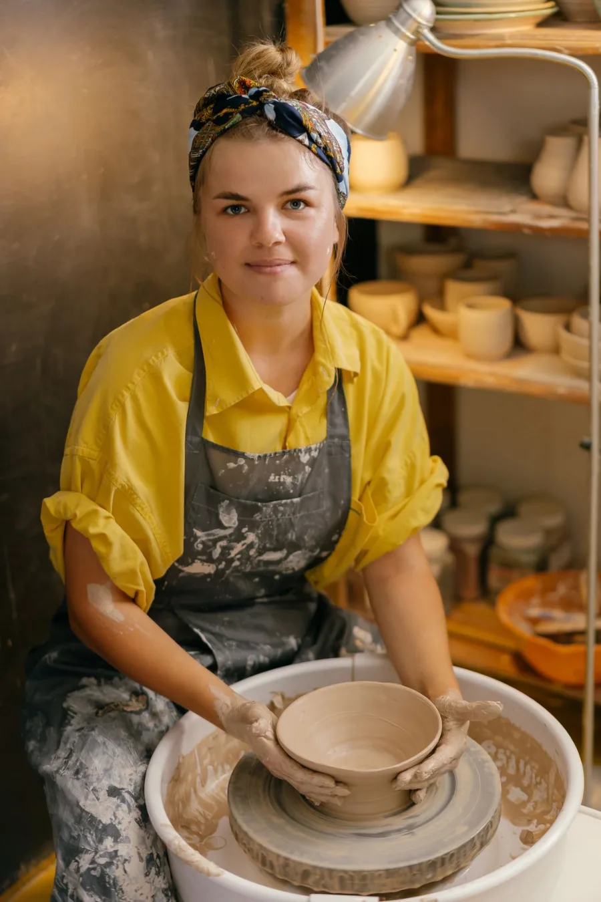
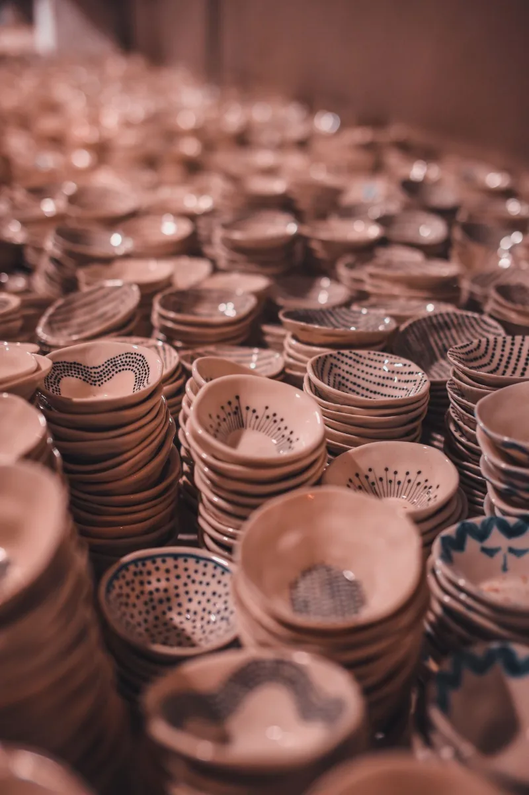
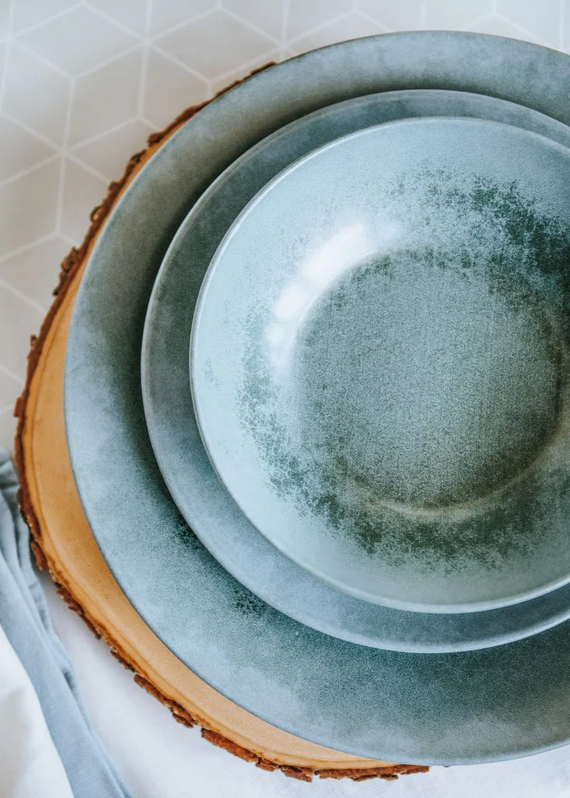

Műhely és alkotó
Ismerd meg Dórát
Az Agyagpad egy kis szentendrei udvari műhely, ahol a korong mellől egy lépés a szárítópolc, és még egy a műhelybolt.

Egy bögre volt az első
Fehér Dóra először egy esti tanfolyamon ült korong mellé. Az első bögréje kicsit félrebillent, de évekig abból itta a reggeli kávét. Akkor szerette meg igazán az agyagot, amikor rájött, hogy egy apró mozdulat mennyit változtat az edény formáján.
Később egy szentendrei udvar régi műhelyében rendezkedett be. A kurzusokon ma is azzal kezdi, amiben neki annak idején a legtöbbet segítettek: megmutatja, hol támaszd meg a kezed, és hagy időt rá, hogy megtaláld a saját mozdulatodat.
A mindennapokra készülnek
A műhely darabjait meleg mázak, természetes földszínek és kézbe illő formák inspirálják.



Megnéznéd közelről?
A műhelybolt csütörtöktől vasárnapig 10–18 óráig tart nyitva.
Megnézem, merre van a műhely